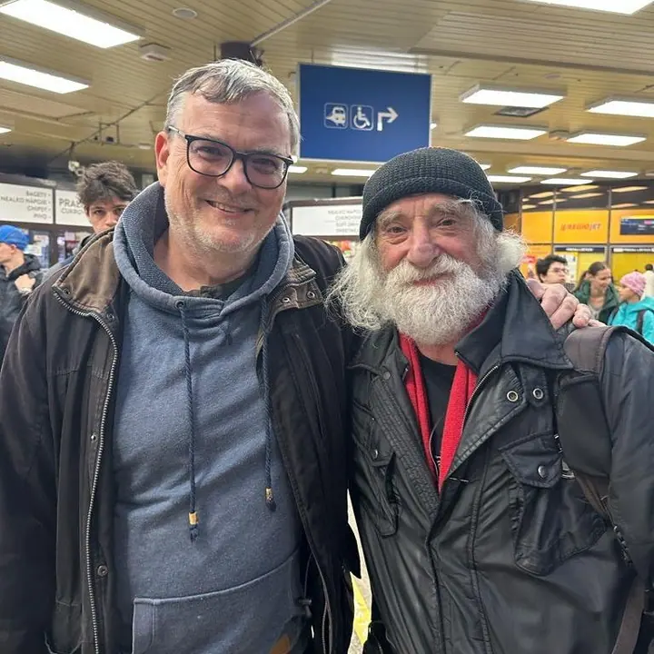
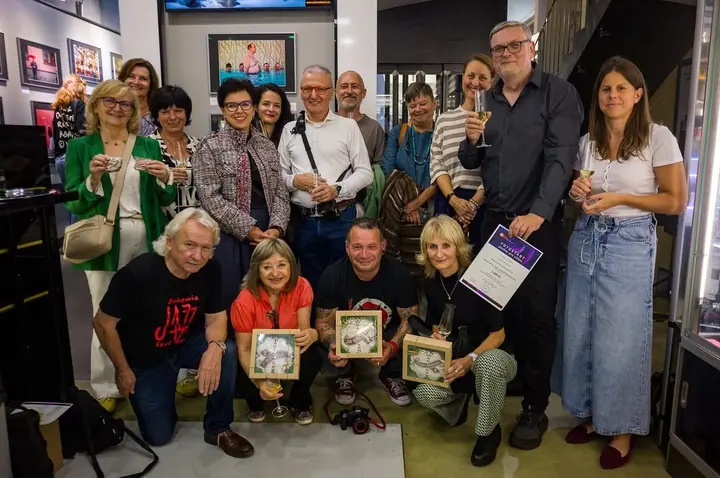
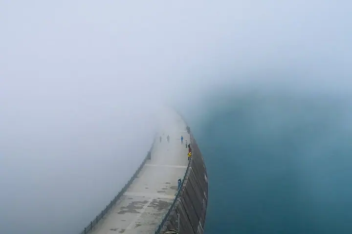

01 / 04
Kurzy focení
Dlouhodobé kurzy pro začátečníky i pokročilé, od prvních kroků až k autorské tvorbě. Učíme fotit systematicky: od vidění přes kompozici po tvorbu ucelených sérií.
Zeptat se na termín→


Naučíme vás fotit lépe
Zeptat se na termín →(01) Ahoj
Jmenuji se Miroslav Němeček a jsem zakladatelem Školy kreativní fotografie v Praze. Učíme fotit začátečníky i pokročilé , od prvních kroků až k vlastní autorské tvorbě. Prošlo jimi už přes 5 000 absolventů a naše kurzy mají akreditaci MŠMT už 18 let.
871lidí sleduje mou práci na Instagramu
427příspěvků s fotkami a příběhy
18let za objektivem
(02) Co fotím
01 / 04
Dlouhodobé kurzy pro začátečníky i pokročilé, od prvních kroků až k autorské tvorbě. Učíme fotit systematicky: od vidění přes kompozici po tvorbu ucelených sérií.
Zeptat se na termín→02 / 04
Jednodenní workshopy street photo s našimi lektory Janou Kupčákovou a Lukášem Najmanem a večerní přednášky. Ideální, když si chcete vyzkoušet nový žánr.
Zeptat se na termín→03 / 04
Kurz focení s certifikátem MŠMT pro ty, kdo to s fotografií myslí vážně nebo se připravují na studium fotografie.
Zeptat se na termín→Dále nabízím
Osobní konzultace nad vašimi fotkami se mnou. Pomůžu vám najít směr a vlastní fotografickou DNA.
↗(04) Postup
Od první zprávy po hotovou galerii.
Krok 1 z 4
Kurzy, workshopy i konzultace jsou rozepsané podle úrovně a termínu. Když si nejste jistí, napište nám a poradíme vám s výběrem.
Krok 2 z 4
Scházíme se v učebně na Francouzské 4 v Praze 2. Probíráme vidění, kompozici a kreativní techniky.
Krok 3 z 4
Mezi lekcemi fotíte zadání a společně je rozebíráme. Dostanete konkrétní zpětnou vazbu, která vás posune.
Krok 4 z 4
Ateliérovou a počítačovou praxi máme ve Stanici techniků DDM v Dejvicích. Na konci kurzu proměníte nápad v ucelenou autorskou sérii.
Od prvních kroků až k autorské tvorbě
(05) Za objektivem
Školu kreativní fotografie jsem založil, protože věřím, že fotit lépe se dá naučit. Sám vedu kurzy portrétní a kreativní fotografie a individuální konzultace. Školu vedu spolu s Lenkou Němečkovou, která koordinuje kurzy a pomáhá studentům najít vlastní fotografický styl.
U nás se neučíte jen mačkat spoušť. Zkoušíte kreativní techniky, fotíte domácí úkoly a dostáváte upřímnou, konkrétní zpětnou vazbu. Pracujeme v malých skupinách a ke každému studentovi přistupujeme individuálně, protože každý má jinou fotografickou DNA.
Kolem školy vyrostla komunita lidí, kteří fotí s chutí. Společně chodíme na výstavy, pořádáme vernisáže a fotosoutěž FOTOSTART. Někteří naši absolventi dnes sami vystavují nebo u nás učí, jiní se u nás připravili na studium fotografie.
Miroslav
Miroslav Němeček · Fotoškola, kurzy fotografie v Praze
Ano. U každého kurzu uvádíme úroveň, máme kurzy pro začátečníky i pro pokročilé a některé jsou otevřené libovolné pokročilosti.
Výuka probíhá v naší učebně ve Francouzské 4 v Praze 2. Ateliérová a počítačová praxe je ve Stanici techniků DDM hl. m. Prahy, Pod Juliskou 2 v Praze 6.
Záleží na délce. Například workshop Photostones stojí 1 990 Kč, sobotní street photo workshop 2 400 Kč a desetivečerní Kurz příštích vítězů 9 990 Kč. Aktuální ceny najdete u každého termínu.
Ano. Můžete darovat konkrétní kurz nebo poukaz na částku. Po zaplacení vám obratem pošleme PDF poukaz e-mailem a obdarovaný si vybere termín.
(07) Kontakt
Napište pár vět o tom, co si představujete, a termín, který se vám hodí.
info@nauctesefotit.cz